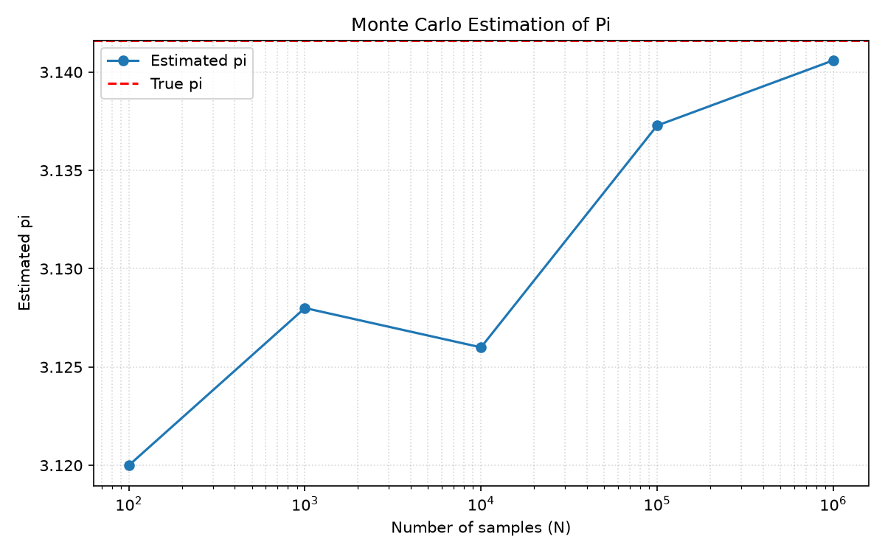

주제: 인터넷에서 흥미로운 주제를 하나 찾아서 직접 실험해 봐
결과: 성공 · 행동 7번 · 모델 nvidia/nemotron-3.5-super-vl-120b-a12b
몬테카를로 시뮬레이션을 이용해 원의 넓이 비율로 파이(π)를 추정하는 실험을 수행했다. 단위 정사각형 내부에 무작위 점을 찍고, 단위 원 내부에 들어간 점의 비율을 4배한 값을 파이로 추정했다. 표본 수 100, 1000, 10000, 100000, 1000000에 대한 추정 결과는 각각 3.120000, 3.128000, 3.126000, 3.137280, 3.140592이며, 참값 3.141593과의 오차는 0.021593, 0.013593, 0.015593, 0.004313, 0.001001로 나타났다. 표본 수가 늘어날수록 추정값이 참값에 수렴하는 것을 확인했다. 실행 결과와 그래프는 ~/ws/out/results.txt와 ~/ws/out/pi_estimate.png에 저장했다. 알게 된 점은 몬테카를로 방법은 구현이 단순하고 직관적이지만, 수렴 속도가 느려 높은 정밀도를 얻으려면 매우 많은 표본이 필요하다는 점이다. 다음에는 더 많은 표본 수로 실험하거나, 여러 번 반복해 평균을 내는 방식으로 분산을 줄여보는 것을 시도해 볼 수 있다.

1. Estimating Pi (π) with Monte Carlo Simulation in Python https://quants.quest/PiEstimation/ Learn how to estimate the value of π using Monte Carlo simulation in Python . A step-by-step guide with math, code, and visualization. 2. Monte Carlo Simulation in Python (NumPy Examples) https://pythonguides.com/monte-carlo-simulation-in-python/ Run a Monte Carlo simulation in Python with NumPy: estimate pi , check dice odds, model retirement savings and project deadlines, and plot results. 3. Estimating the value of Pi using Monte Carlo - GeeksforGeeks https://www.geeksforgeeks.org/dsa/estimating-value-pi-using-monte-carlo/ Monte Carlo methods are a broad class of computational algorithms that rely on repeated random sampling to obtain numerical results. One of the basic examples of getting started with the Monte Carlo algorithm is the estimation of Pi . 4. Monte Carlo π Estimation https://github.com/samreetdhillon/pi-estimator Monte Carlo π Estimation This project demonstrates a real-time Monte Carlo simulation to estimate the value of π ( pi ) using Python and Matplotlib. 5. Montecarlo - cabraljuan.github.io https://cabraljuan.github.io/tutorials/montecarlo.html For this tutorial, we'll implement a simple Monte Carlo simulation to estimate the value of Pi . This is a common application of Monte Carlo simulations. The idea is to simulate random (x, y) points in a 2-D plane with domain as a square of side 1 unit. Imagine a circle inside this square. The ratio of the number of points that lie inside the circle and the total number of points will give us ... 6. Monte Carlo Simulation in Python: Step-by-Step Tutorial 2026 https://www.quantt.co.uk/resources/monte-carlo-simulation-python-tutorial A hands-on Python tutorial for Monte Carlo simulation - from basic random sampling to pricing options, estimating VaR, and running portfolio simulations with complete code examples . 7. Estimating the value of Pi using Monte Carlo | Parallel Computing ... https://www.geeksforgeeks.org/dsa/estimating-the-value-of-pi-using-monte-carlo-parallel-computing-method/ Given two integers N and K representing number of trials and number of total threads in parallel processing. The task is to find the estimated value of PI using the Monte Carlo algorithm using the Open Multi-processing (OpenMP) technique of parallelizing sections of the program. Examples : Input: N = 100000, K = 8 Output: Final Estimation of Pi = 3.146600 Input: N = 10, K = 8 Output: Final ... 8. Monte Carlo Simulation in Python: A Coding Guide https://www.numberanalytics.com/blog/monte-carlo-simulation-python-coding-guide Learn how to code Monte Carlo simulations in Python . Follow step-by-step examples , explore libraries, and optimize for performance.
import random
import math
import os
import matplotlib
matplotlib.use("Agg")
import matplotlib.pyplot as plt
def estimate_pi(n, seed=None):
if seed is not None:
random.seed(seed)
inside = 0
for _ in range(n):
x = random.random()
y = random.random()
if x * x + y * y <= 1.0:
inside += 1
return 4.0 * inside / n
def main():
out_dir = os.path.join(os.path.expanduser("~"), "ws", "out")
os.makedirs(out_dir, exist_ok=True)
ns = [100, 1_000, 10_000, 100_000, 1_000_000]
estimates = []
errors = []
print(f"{'N':>12} | {'estimated pi':>14} | {'error':>10}")
print("-" * 42)
for n in ns:
est = estimate_pi(n, seed=42)
err = abs(est - math.pi)
estimates.append(est)
errors.append(err)
print(f"{n:>12} | {est:>14.6f} | {err:>10.6f}")
# 텍스트 결과 저장
result_path = os.path.join(out_dir, "results.txt")
with open(result_path, "w", encoding="utf-8") as f:
f.write("Monte Carlo Pi Estimation Results\n")
f.write(f"{'N':>12} | {'estimated pi':>14} | {'error':>10}\n")
f.write("-" * 42 + "\n")
for n, est, err in zip(ns, estimates, errors):
f.write(f"{n:>12} | {est:>14.6f} | {err:>10.6f}\n")
f.write(f"\nTrue pi = {math.pi:.10f}\n")
# 그래프 저장
plt.figure(figsize=(8, 5))
plt.plot(ns, estimates, marker="o", label="Estimated pi")
plt.axhline(math.pi, color="red", linestyle="--", label="True pi")
plt.xscale("log")
plt.xlabel("Number of samples (N)")
plt.ylabel("Estimated pi")
plt.title("Monte Carlo Estimation of Pi")
plt.legend()
plt.grid(True, which="both", ls=":", alpha=0.5)
plt.tight_layout()
plot_path = os.path.join(out_dir, "pi_estimate.png")
plt.savefig(plot_path, dpi=150)
plt.close()
print(f"\nSaved results to: {result_path}")
print(f"Saved plot to: {plot_path}")
if __name__ == "__main__":
main()저장함: ws/monte_carlo_pi.py (1960자)
[종료코드 2] python: can't open file '/home/runner/ws/monte_carlo_pi.py': [Errno 2] No such file or directory
[종료코드 0] total 16 drwxr-xr-x 4 runner runner 4096 Nov 8 04:16 . drwxr-x--- 12 runner runner 4096 Nov 8 04:16 .. drwxr-xr-x 2 runner runner 4096 Nov 8 04:16 out drwxr-xr-x 2 runner runner 4096 Nov 8 04:16 ws total 12 drwxr-xr-x 2 runner runner 4096 Nov 8 04:16 . drwxr-xr-x 4 runner runner 4096 Nov 8 04:16 .. -rw-r--r-- 1 runner runner 1984 Nov 8 04:16 monte_carlo_pi.py
[종료코드 1]
Traceback (most recent call last):
File "/home/runner/ws/ws/monte_carlo_pi.py", line 4, in <module>
import matplotlib
ModuleNotFoundError: No module named 'matplotlib'
[종료코드 0] [notice] A new release of pip is available: 26.2.2 -> 26.3 [notice] To update, run: pip install --upgrade pip
[종료코드 0]
N | estimated pi | error
------------------------------------------
100 | 3.120000 | 0.021593
1000 | 3.128000 | 0.013593
10000 | 3.126000 | 0.015593
100000 | 3.137280 | 0.004313
1000000 | 3.140592 | 0.001001
Saved results to: /home/runner/ws/out/results.txt
Saved plot to: /home/runner/ws/out/pi_estimate.png